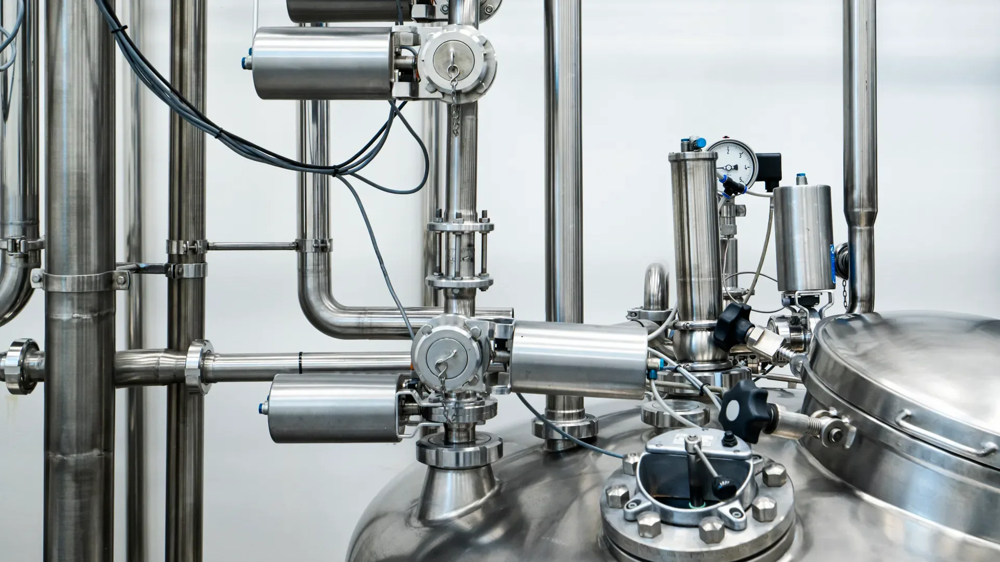
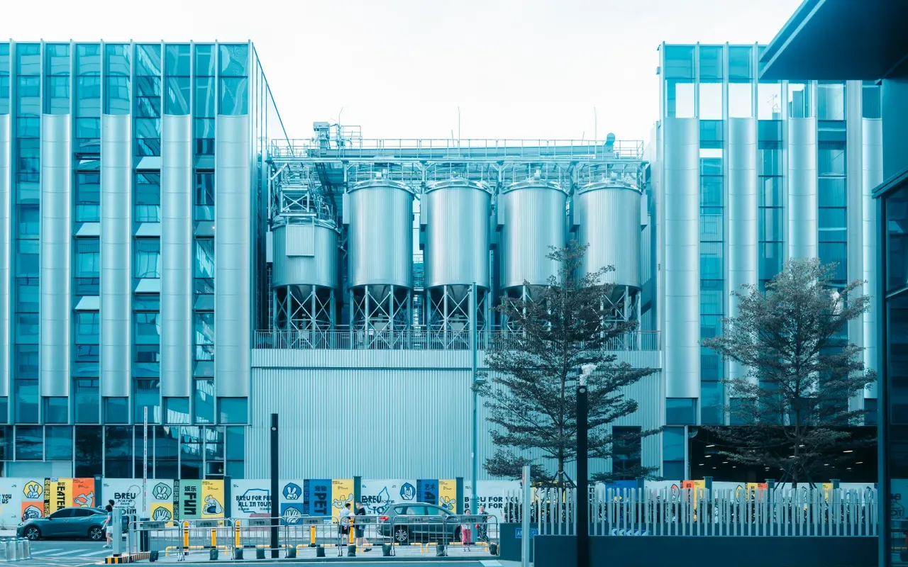
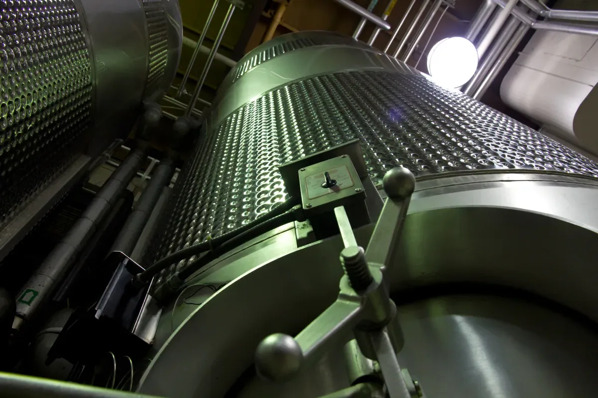
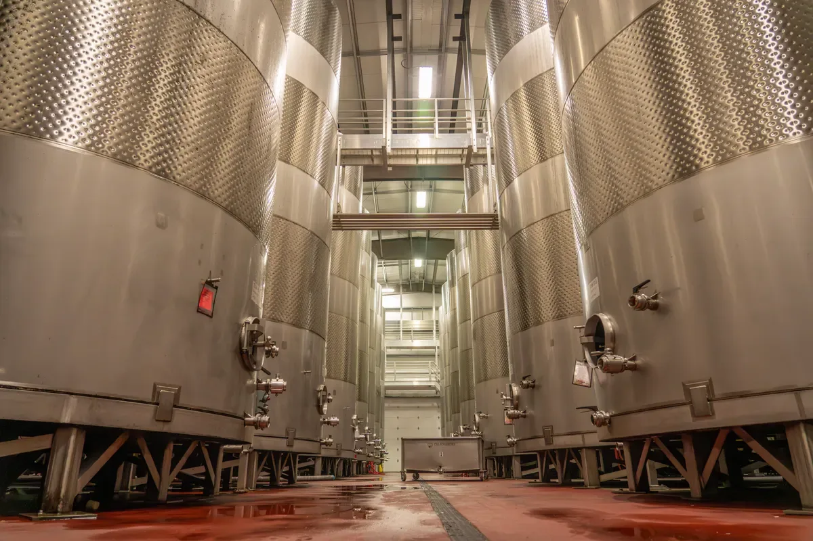
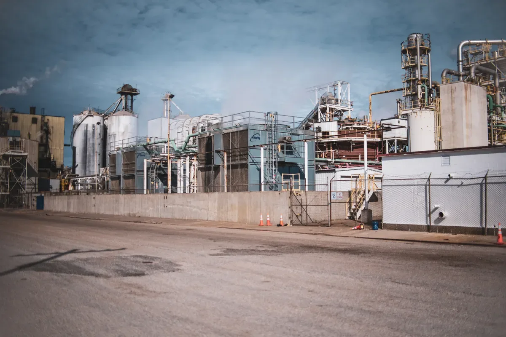
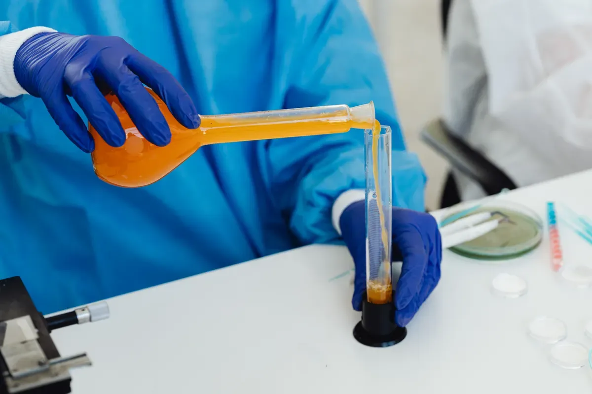

PRD-01
PRD-01
Solid Bio-Energy Stream
Biomass Spent Pellets
Fibrous solids left after extraction are dried and pressed into pellets for industrial heating applications.

AEI processes cashew testa into tannin, catechin and non-edible oil. The remaining fibrous material is made into biomass pellets at the Gandrajupalli facility.
Our feedstock
Cashew testa from nut processing
Products
Tannin, catechin, oil and biomass pellets
Company
Bengaluru office, Gandrajupalli plant
Incorporated on 2 August 2022 under the Companies Act, 2013 (CIN: U15400KA2022PTC164613), AEI Extraction Industries Private Limited is headquartered in Indiranagar, Bengaluru, with its primary manufacturing unit situated at MSME-CDP Gandrajupalli, Chittoor District, Andhra Pradesh.
Cashew testa is the thin skin removed from cashew kernels during processing. AEI uses this by-product as a feedstock for tannin, catechin and non-edible oil.
The fibrous material left after extraction is dried and pressed into Biomass Spent Pellets. Product grades and batch details are available from our team.
Cashew testa that would otherwise have limited use becomes a source of industrial extracts and oil.
AEI's production facility is at MSME-CDP Gandrajupalli in Chittoor District, Andhra Pradesh.

AEI makes tannin, cashew testa paste / catechin, non-edible oil and biomass pellets. Product photos are illustrative; ask us for current specifications and availability.
PRD-01
Fibrous solids left after extraction are dried and pressed into pellets for industrial heating applications.
 PRD-02
PRD-02
Non-edible oil intended for industrial use, including soap making. Ask us for current batch details.
Liquid tannin for industrial applications. Contact us for current specifications and batch information.
 PRD-04
PRD-04
A paste or extract made from the thin skin removed from cashew kernels. Ask about available grades and current batch information.
AEI's manufacturing facility is in Gandrajupalli, Andhra Pradesh. The images below are illustrative and do not show AEI's plant.






AEI processes cashew testa into tannin, catechin and non-edible oil for industrial use.
Fibrous solids left after extraction are dried and pressed into biomass pellets. Contact us for current product specifications and batch information.
Tell us what you need, how you plan to use it and the quantity you are considering. We can discuss the current product details with you.
Engineered extraction, separation, concentration, and pelletizing workflows designed for repeatable commercial-scale manufacturing.
AEI processes cashew testa and makes biomass pellets from the fibrous solids left after extraction.
Multi-industry relevance across soap & detergent manufacturing, leather processing, water treatment, specialty chemicals, and industrial thermal energy.
Transparent technical communication, sample coordination upon enquiry, and structured bulk supply alignment from Bengaluru, India.
Key information for procurement managers, formulation chemists, and industrial buyers evaluating AEI Extraction Industries.